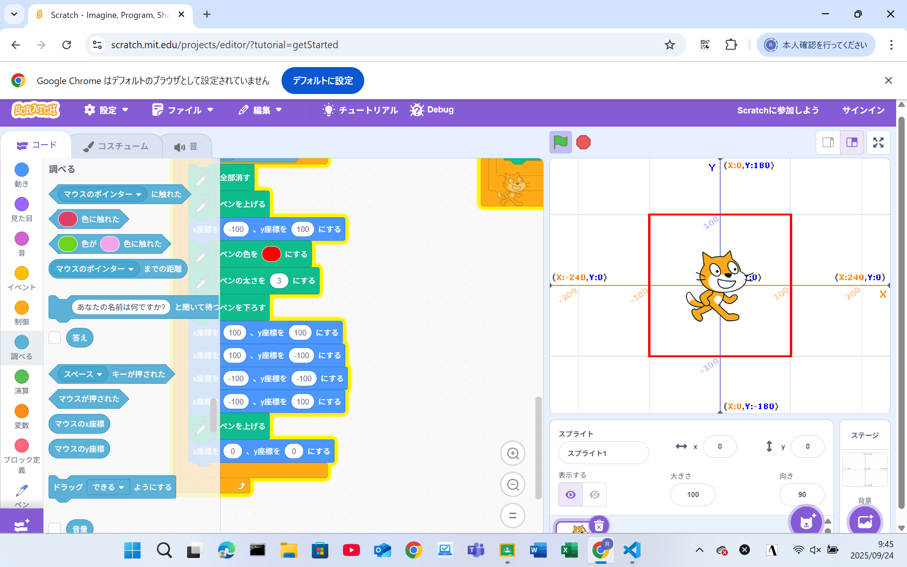
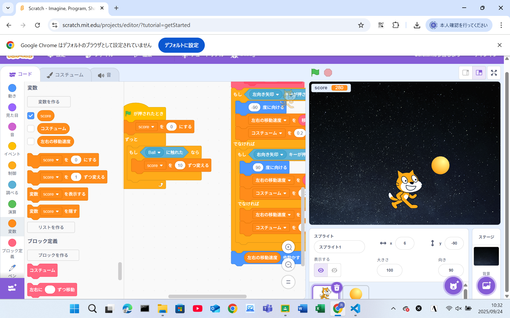

1週目のレポート ： 公大高専１年実習I-1
4b班38番 栁川 翔
第1週目
1-1 サイエンスアート

1.内容
Scratchの基本的なプログラムを学び、サイエンスアートを作った。
ペンの使い方や、旗が押されたときのような条件によるプログラム、座標移動や向き変更を学習した。
2.感想
もっと時間をかければ複雑な模様も描けたと思うが、シンプルかつ組みやすいブロックコードを作れたと思う
サイエンスアートも面白いが、やはりゲーム開発に比べると自分の意欲は小さいと感じた。
1-2 ゲーム

1.内容
回転方法の限定や条件による移動、音やコスチューム、スプライトの表示や変数を使い、
落ちてくるリンゴをキャッチして点数が増えるゲームを作った。
2.感想
Scratchを使ったことがあるので少し簡単に思えた。そこで変数を活用した移動やコスチューム変更を
行えるようにしたり、ブロック定義を利用したコードの簡潔化を行うことで少し達成感のあるゲーム開発時間にできた。
1-3 ホームページ作成
私のホームページ
1.内容
Githubを利用して自分のホームページなどを作った。
自分のホームページのURLの取得や内容、テキストの変更方法について学習した。
2.感想
html言語は触れたことがなくとても興味深いものだった。「br」が改行となっているように、
他にも気になるものがあるためhtml言語を学びたいと強く思った。
各ページへのリンク
1週目のレポート
2週目のレポート
3週目のレポート
私のホームページ